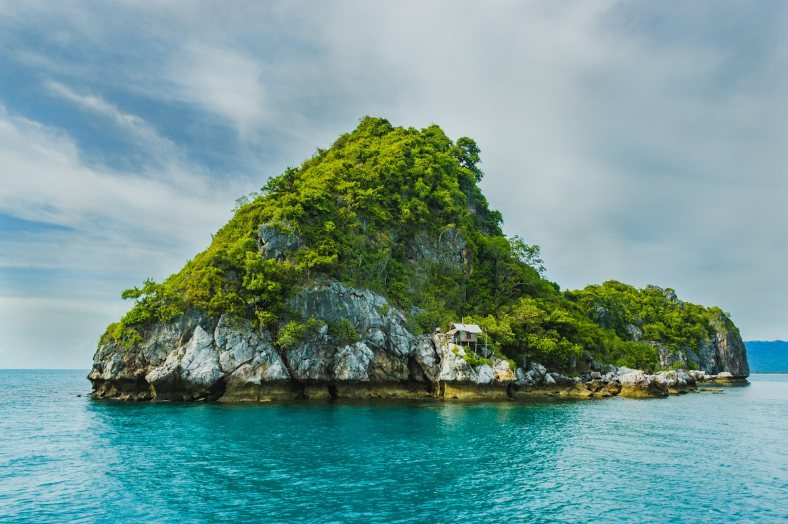
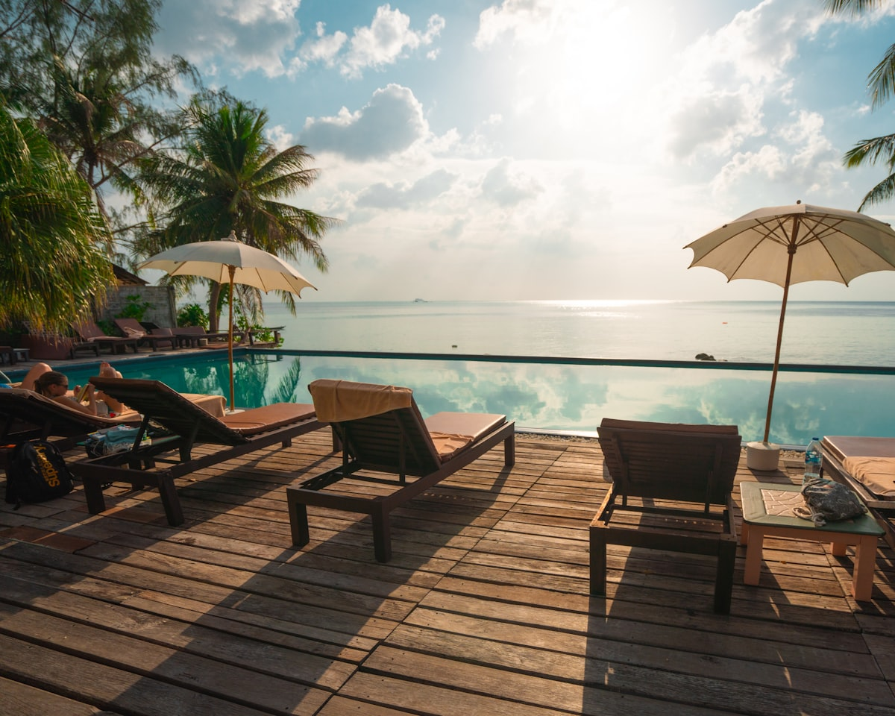

Nights 1–4 · Jul 17–215-min walk to Bai Kem — one of the world's most beautiful beaches. Near Sunset Town, JW Marriott, New World, and Regent dining. Villa P909. Family wellness villas with clubhouse, pool, and spa access.
Ong Lang Beach — 4-min walk to sand. Private pool villa, kitchenette, kids club, chocolate hour daily. 5 min to Grand World. Safari is 30–40 min away. Free airport shuttle.
Main show · 9pm · Buy 2-person combo for better discount
Tixgo.vn5pm sunset show · 100k/vé · Sunset Town
Tixgo.vnMorning slot · Best weather window · Book ahead
Tixgo.vnScooter + car · Delivers to P909 · +84 908 954 195
WhatsAppHalf-day · Pickup from Movenpick · Ages 5+ welcome
Klook · TripAdvisorSpeedboat tour · North coast · Family-friendly
OnBird · Pelago16:10 dep HKG T2 → Arrive 18:05. Pre-book Grab × 2 or minivan. ~35 min to Sun Tropical Village.
5-min taxi from villa. Beachfront seafood, great views, cold drinks. The friend specifically recommended this place.
Bãi Khem BeachVilla pool or beach walk if energy allows.
No rush — this is the group's pace for every morning.
5-min walk. One of the world's most beautiful beaches — white sand, clear water, calm for kids.
Open in MapsTổ 8 Đường Cao Tốc, Khu Phố 6, An Thới — right outside your villa gate. Family com, local, cheap, genuinely good. Delivery: 0971 981 234.
Friend recommended Delivery available Outside villa gateJet ski, kayak, banana boat — rental stands right on the beach. Negotiate on the spot. Kids aged 5–10 will love the banana boat. No booking needed.
🤿 Kayak · 🏄 Jet ski · 🍌 Banana boatSeafood, beach view, cold drinks, relaxed atmosphere. Friend's top dinner pick for this area.
Open in Maps~25 min from villa. Car arranged via Ms. Ngoan or Grab.
7,899m over open ocean. 20 minutes of panoramic views. Bring a light jacket — breezy and AC. Book morning slot.
🚠 20 min over ocean An Thới StationSlides, splash zones, wave pools. Perfect for ages 5–10. Older kids: Exotica Theme Park outdoor rides. Lunch at island food stalls.
🎢 Slides · Wave pool · Splash zonesMediterranean streets, white buildings, blue domes. Don't skip this on the way back — it's one of the most photogenic spots in Vietnam.
📸 Instagram gold5pm outdoor water show at sunset. 100k/vé. Buy via Tixgo.vn (cheaper than door). Genuinely impressive.
🎭 Via Tixgo.vn · 100k/véVietnam's first creative seaside night market. 40+ stalls. Opens 4pm–midnight. Street food to upscale.
Friend recommended Sunset TownKhu Phố 6, An Thới. Authentic local seafood — no frills, fresh, great. Friend called it a "trải nghiệm địa phương" (genuine local experience). No English menu — bring Google Translate or point and order. 0342 756 666.
Friend recommended Open in MapsEscape the midday heat. Everyone rests before the big show tonight.
🏊 Villa poolLate afternoon stroll. Mediterranean streets, ice cream, golden hour at the bridge. Best sunset view on the island.
Kiss BridgeBalearic-inspired beachfront venue. Mediterranean cuisine, cocktails, stunning infinity pool and ocean views. ~200k VND taxi each way. TableCheck reservation recommended.
Friend recommended Open in MapsOutdoor water + light show on Kiss Bridge. Buy 2-person combo via Tixgo.vn for better discount. Arrive 20:30 for decent seats — general admission only.
Must-see · Book via Tixgo.vnLast chance on one of the world's most beautiful beaches. 5-min walk from villa.
🏖️ Don't skip it~10–15 min. Grab or pre-arranged car. Drop bags, explore the villa.
Inside Movenpick. No travel needed. Vietnamese + international cuisine. High quality, large menu, kids-friendly.
On-site · No travel Open in MapsSettle into the villa. Kids swim, adults decompress. Beach is 4-min walk.
🏊 Private pool · 🏖️ Ong Lang BeachOng Lang Beach. Tapas, cocktails, live music, sunset views. Remarkably high TripAdvisor rating.
Happy Hour 5–7pm · Walkable Open in MapsMs. Ngoan's car already arranged for the day. Head north to Ganh Dau first (~30 min from Movenpick), Safari after lunch (30 min away).
🚗 Arrange night before · +84 908 954 195North Phu Quoc's best snorkeling. Calm, clear, shallow coral reefs — perfect for kids 5+. Vibrant coral gardens, sea fans, tropical fish. North coast is sheltered — calm even in July.
🤿 Shallow reef · Kid-safe · Crystal clear Ganh Dau BeachRight next to Ganh Dau snorkeling. Beachfront, grilled seafood, pepper crab. Very convenient — you're already there.
Open in MapsOpen-range safari tram — tigers, elephants, lions up close. Walking zones + petting area. All 5 kids will lose their minds. Well-shaded, AC restaurants on site.
🦁 Open 8am–5pm · Afternoon = still great Open in Maps~35 min drive. Everyone tired and happy. Beach walk or pool before dinner.
5 min from Movenpick. Opens 5pm. Newer, cleaner than Bach Dang. Very easy evening — no long drive.
Open in MapsJungle-lined river, calm water, kingfishers and eagles. Kids 5+ can do tandem kayak with parent. English-speaking guide, hotel pickup from Movenpick. Book via Klook or TripAdvisor.
Half-day · Pickup from Movenpick Open in MapsBack from kayak by midday. Eat at Lang Chai — no travel needed, AC, fast.
On-site · No travelFinal swim. Pack in the afternoon. Sunset walk on Ong Lang Beach — last one.
🏊 Private villa pool · 🏖️ Last sunsetOng Lang Beach. Organic, sustainably sourced Vietnamese cuisine. Beautiful outdoor setting. TripAdvisor 4.4 · 1,554 reviews. Dress up — last night.
🌟 Farewell dinner · Dress up Open in MapsPre-book Grab or Ms. Ngoan for airport transfer. PQC is ~20–25 min from Movenpick.
UO599 departs 10:40. Allow 90 min for international check-in. Buy fish sauce and black pepper at Duty Free if time allows.
✈️ Arrive PQC 8:30amPhu Quoc · July 17–24, 2026 · The Ku Family